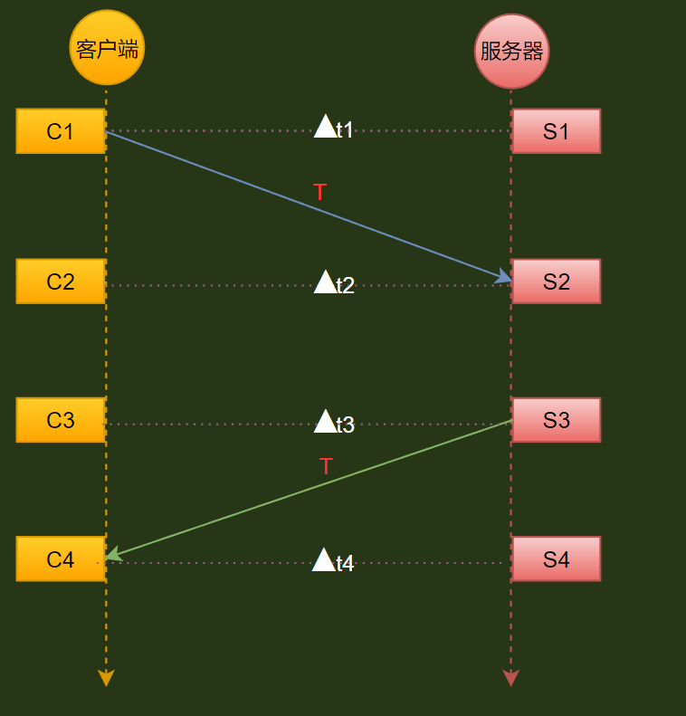
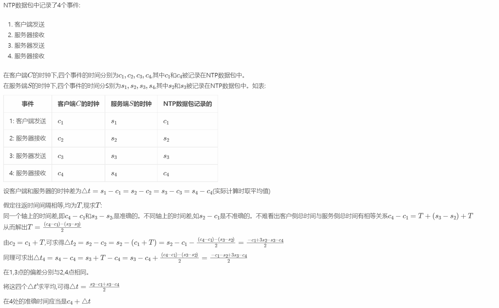

NTP授时原理


C1 客户端发送请求的时间
S2 服务器接收请求的时间
S3 包离开场景时候的时间
C4 客户端接到返回包时间
m_nNetDelay 网络延时 d = (S2 - C1) + (C4 - S3)
m_nDiftime 服务器与客户端的时差 T = [(S2 - C1) + (S3 - C4)] / 2
m_nNetDelay 其实就是RTT 也就是往返时间 也可以这么求 C4 - C1 - (S3 - S2)
protobuff包定义
message SceneClocksyncRequest
{
int64 originate_timestamp = 1;客户端发送请求的时间C1
}
message SceneClocksyncRet
{
int64 originate_timestamp = 1;客户端发送请求的时间 C1
int64 receive_timestamp = 2;服务器接收请求的时间 S2
int64 scene_timestamp = 3;场景同步时间戳【不参与NPT计算】
int64 transmit_timestamp = 4;包离开场景时候的时间 S3
}
具体代码实现
-- 同步请求
local function SendClockSyncReqMsg()
local sceneClocksyncRequest =
{
originate_timestamp = serviceCore.getClockRealtime()
}
serviceCore.send(m_channelID,"SceneClocksyncRequest",sceneClocksyncRequest)
end
-- 同步反馈
function robotStateMachine.SceneClocksyncRet(proto)
--proto.originate_timestamp C1 客户端发送请求的时间
--proto.receive_timestamp S2 服务器接收请求的时间
--proto.transmit_timestamp S3 包离开场景时候的时间
--destination_timestamp C4 客户端接到返回包时间
--m_nNetDelay 网络延时 d = (S2 - C1) + (C4 - S3)
--m_nDiftime 服务器与客户端的时差 T = [(S2 - C1) + (S3 - C4)] / 2
--m_nNetDelay 其实就是RTT也就是往返时间 也可以这么求 C4 - C1 - (S3 - S2)
local destination_timestamp = serviceCore.getClockRealtime()
m_nNetDelay = (proto.receive_timestamp - proto.originate_timestamp) + ((destination_timestamp - proto.transmit_timestamp))
m_nDiftime = ((proto.receive_timestamp - proto.originate_timestamp) + (proto.transmit_timestamp - destination_timestamp) / 2)
RTT = destination_timestamp - proto.originate_timestamp - (proto.transmit_timestamp - proto.receive_timestamp);
end
-- 真正算出来的同步时间
function GetServerTime()
return serviceCore.getClockRealtime() + m_nNetDelay + m_nDiftime
end